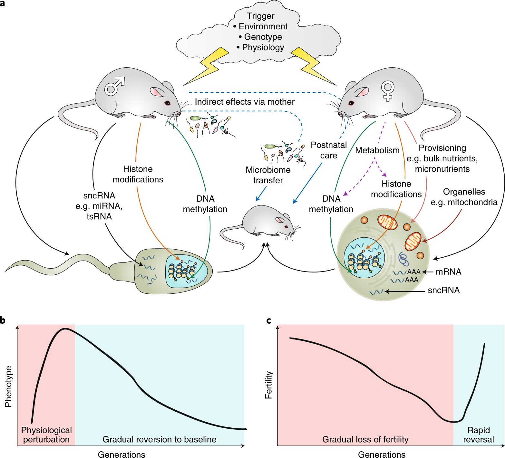
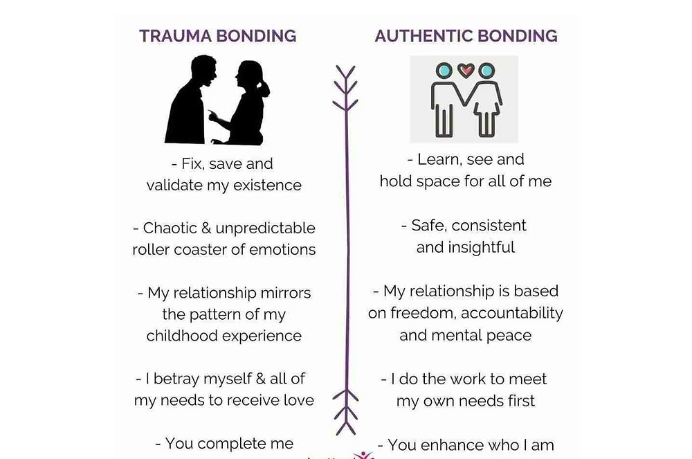
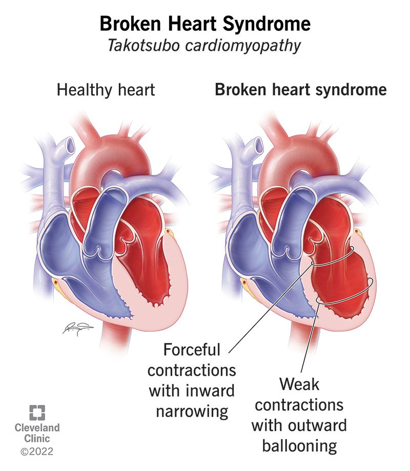
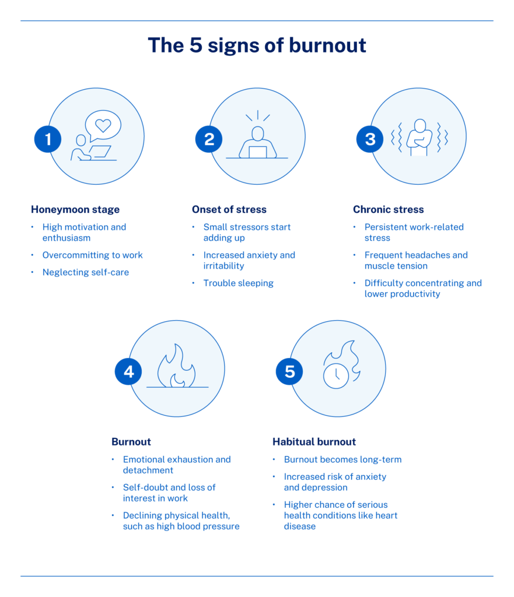

These laws survived five complete rewrites of the memoir. They're not abstract theory—they're battle-tested against 43 years of lived wreckage. They're organized into five seasons of healing. You can't skip to integration if you haven't dealt with the wiring. Each season builds on the last.
Start where you are. Come back when you're ready for the next season.
Season 1
Foundations
Understanding the wiring, inherited trauma, and early survival mechanisms.
Before you can heal, you need to know what you're working with. This season establishes the neurobiological and attachment blueprints that formed under duress. We confront the invisible forces: inherited survival strategies, the mechanics of trauma bonding, and the critical distinction between a psychological flaw and a physiological adaptation. Healing starts not with fixing yourself, but with understanding your original, brilliant wiring.
Law #1
Survival Is Wiring, Not Weakness
Born wired for war, not broken.
The Science: Neuroception Over Perception
You have spent years thinking you have a personality defect. You don't. You have a neuroception adaptation. Your nervous system is constantly scanning the environment for danger—a process Dr. Stephen Porges calls neuroception. This happens in the brainstem, far below conscious thought. If you grew up in a war zone (emotional or physical), your "threat dial" was permanently soldered to ON to keep you alive.
The Adaptation:
Your body became efficient at dumping cortisol and adrenaline into your blood at the slightest shift in tone, movement, or energy. This is not anxiety, paranoia, or "overreacting." It is a high-performance survival system activating in a low-threat environment.
The Cost:
You live in a state of chronic hypervigilance, exhausting your adrenal system and making rest feel dangerous.
Somatic Markers
Constant scanning of rooms/exits (hypervigilance)
Inability to sit with your back to a door
Startle reflex that feels like an electric shock
Tightness in the psoas (hips) or jaw, ready to run or fight
Application: Reassure the Threat System
When you feel that surge of "irrational" panic:
Don't fight it. Fighting tells your brain there is a threat.
Name it: Say, "My wiring is detecting danger."
Orient: Look around the room. Find three square objects. Tell your brainstem: "I see you. We are safe right now."
Law #2
Trauma Is Inherited, Not Just Experienced
You carried ghosts before you had a name for them.
The Science: Epigenetic Inheritance

Your grandmother's terror during wartime, your grandfather's rage, your mother's unspoken grief—these didn't just shape their lives. They altered their gene expression. Through a process called epigenetic inheritance, trauma-related adaptations can be passed down across generations. You may be carrying survival strategies that predate your own birth.
Somatic Markers
Anxiety or depression that feels unattached to any specific event in your own life
Relational patterns (e.g., distancing or fighting) that repeat across generations
A chronic feeling of foreboding or waiting for the "other shoe to drop"
Application: Recognize the Ancestral Load
View your symptoms as clues, not flaws. If a behavior doesn't feel like yours, it might be inherited. Reframing the symptom as an ancestral strategy allows you to hold it with compassion and consciously choose to put it down.
Law #3
A Dangerous Shelter Is Still a Shelter
You stay because leaving feels like dying.
The Science: Trauma Bonding

Your nervous system doesn't distinguish between good attachment and dangerous attachment—it only knows attachment equals survival. When a caregiver is both the source of terror and the only source of comfort, your brain forms a trauma bond. The abuser becomes neurologically encoded as your lifeline.
Somatic Markers
Physical nausea or anxiety when faced with safety or calm
A cognitive split where you simultaneously rationalize the abuse while plotting to leave
Feeling more "in love" after a period of conflict or cruelty
Application: Build Internal Shelter First
Acknowledge that staying was a brilliant survival strategy. Do not demand self-hatred for the choice. To leave, you must first create a new, safe internal shelter before dismantling the dangerous external one.
Law #4
Unprocessed Grief Becomes a Ghost
What you don't mourn will haunt you.
The Science: The Loss of the "Self"

Complex trauma doesn't just steal your childhood—it steals the person you might have been. This is a profound, often unacknowledged loss. When grief is not processed, it becomes somaticized—stored in the body as chronic pain, numbness, or rage.
Somatic Markers
A cold, heavy knot in the chest or throat that never dissipates
Tears that feel "stuck" or the inability to cry despite deep sadness
Bouts of rage that seem disproportionate to the trigger
Application: Create Grief Containers
Grief must be embodied. Find small, safe containers for the feeling. This could be writing a letter you never send, listening to a specific song, or setting a timer for five minutes to allow the sensation to wash over you while maintaining ground contact.
Season 2
Battlefields
How trauma wiring shows up in work, relationships, and family patterns.
The wiring established in Season 1 now drives your life in the external world. This season explores sympathetic activation—the fight, flight, and fawn responses—as they manifest in addiction to chaos, destructive relationship patterns, and hyper-productivity. You are actively fighting for survival here, but the battle is being waged against ghosts of the past. The nervous system is running on high-energy resources, prioritizing action over reflection.
Law #5
Work Becomes the War You Can Win
If you can't control your life, control your work.
The Science: The Fight Response as Productivity

When your home environment was unpredictable chaos, your nervous system channeled the high-energy "fight" response away from confrontation (which was often too dangerous) and into high-stakes performance. Your hypervigilance—the very mechanism that destroys intimacy—becomes a superpower for crisis management. This is called functional hyperarousal. You work not for money or success, but to regulate your internal chaos.
The Cost:
You confuse being busy with being safe. Your self-worth becomes entirely contingent on external output, creating an addiction to the adrenaline-cortisol cycle that drives the work.
Somatic Markers
Chronic burnout that feels shameful or like personal failure
An inability to tolerate down-time or unstructured leisure; panic sets in when the laptop closes
Physical collapse (sickness, injury) immediately following a major project completion
Application: Decouple Value from Output
Your job is to identify the difference between work and avoidance.
Conscious Pause: For every hour of hyper-focus, schedule five minutes of conscious grounding (looking away from the screen, feeling your feet).
Intentional Failure: Intentionally and safely fail a low-stakes task (e.g., leave one non-urgent email unanswered overnight). This signals to your nervous system that imperfection is not death.
The Question: When you feel the overwhelming urge to work, ask: "Am I solving a problem, or am I trying to outrun a feeling?"
Law #6
Mother Wounds Don't Die with Mothers
The absence echoes louder than presence ever did.
The Science: The Broken Mirror
The mother-child bond is the first and most critical attachment. When that bond is fractured—through neglect, emotional unavailability, or abuse—it creates a developmental rupture. The child's sense of self is built through the mother's mirroring. If the mirror is cracked, distorted, or absent, the child internalizes: I am unlovable.
Somatic Markers
A "black hole" sensation in the chest or gut when alone
Fawning: automatic urgency to manage others' emotions because your survival once depended on keeping the big body calm
Feeling physically invisible when not performing for others
Application: You Are The Mirror Now
You cannot go back and fix the mother you had. You must become the mother you needed.
The Practice: When you are spiraling, place a hand on your chest (activating the vagus nerve's calming branch). Speak to the younger part of you with the tone you wish she had used: "I am here. I am not leaving. We will figure this out." You are literally building the right-orbitofrontal circuits that were never installed. This is reparenting at the neurological level.
Laws #7-11 continue in this section...
Each law follows the same clear, readable format with Science, Somatic Markers, and Application sections.
(Full content for all 26 laws is being prepared for optimal readability)
Season 3
Systems & Shadows
Navigating institutions, internal hijackers, and the ways trauma shows up in your body.
If Season 2 was about hyperarousal (fighting, running, performing), Season 3 is about hypoarousal (collapsing, numbing, freezing). You cannot run on adrenaline forever; eventually, the biological breaker trips. This isn't laziness or weakness. This is your brainstem's last-ditch survival protocol: shut down everything non-essential and wait for the threat to pass.
Laws #12-17 explore this season...
Topics include: navigating systems that don't understand trauma, internal parts work, freeze responses, and somatic manifestations.
Season 4
Collapse & Reckoning
When the armor falls and you face what's underneath.
This is the season where everything you've been running from catches up. The protective mechanisms fail. The body says no more. This collapse is not failure—it is the necessary breakdown before breakthrough. Here, you confront the core wounds, the unprocessed rage, and the grief you've been outrunning for decades.
Laws #18-22 guide you through this season...
Topics include: nervous system collapse, confronting rage, the dark night of healing, and sitting with what cannot be fixed.
Season 5
Integration & Emergence
Building a life where survival is no longer the primary mission.
Integration is not about erasing the past. It's about metabolizing it. You carry the wiring, but it no longer runs you. This season is about reclaiming agency, building sustainable relationships, and discovering who you are when you're not just surviving. The work here is subtle, ongoing, and deeply personal.
Laws #23-26 complete the framework...
Topics include: post-traumatic growth, sustainable relationships, reclaiming joy, and living beyond survival mode.
Ready to Go Deeper?
These laws are the foundation. The full framework includes detailed applications, somatic practices, and integration tools.